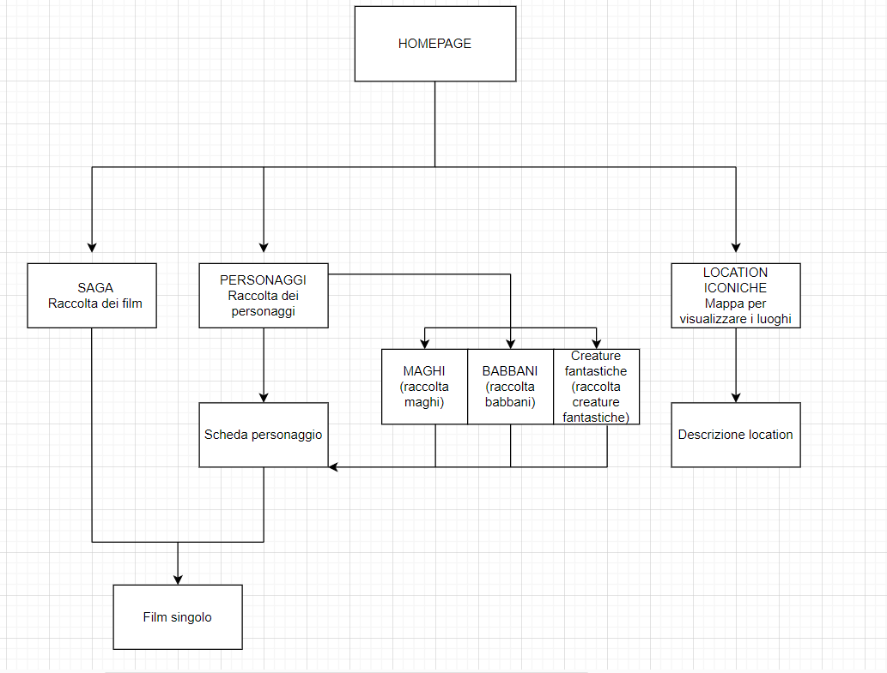
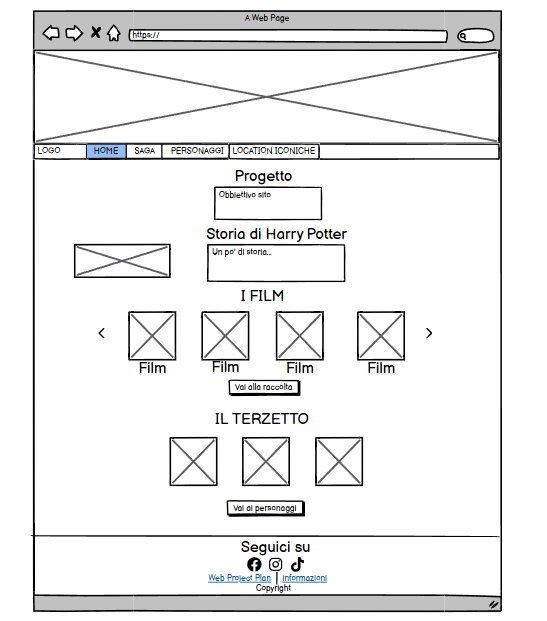
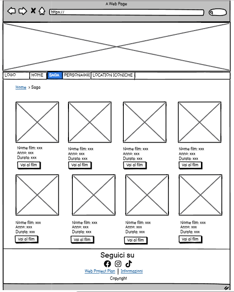
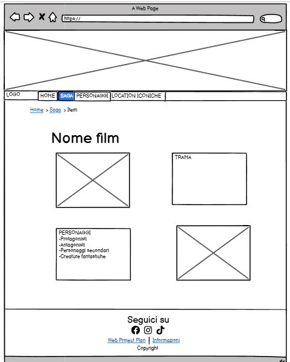
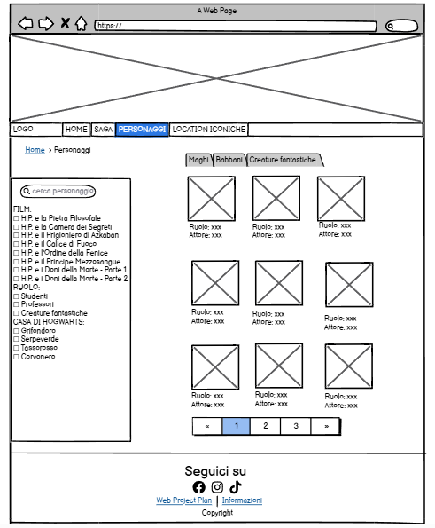
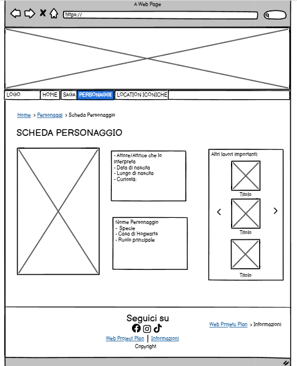
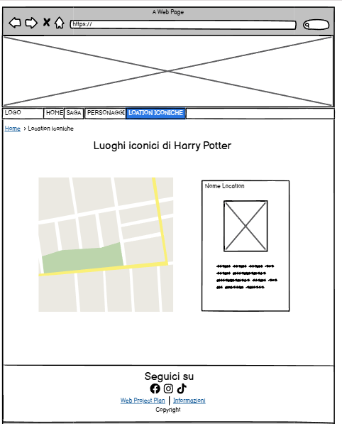

Web Project Plan
Indice
1. Idea
L'idea del sito web è quella di offrire un'esperienza immersiva sulla saga di Harry Potter, approfondendo gli otto film, i personaggi e le location iconiche. Ogni film avrà una scheda dedicata con trama e personggi. I personaggi saranno organizzati su richiesta dell’utente per film, tipologia e casata , con dettagli sulla loro storia e sugli attori che li interpretano. Le location includeranno descrizioni, immagini e una mappa interattiva per esplorare i luoghi reali delle riprese.
2. Brief
2.1 Obbiettivi informativi
Il mio sito ha l’obiettivo di fornire una panoramica introduttiva sull’universo di Harry Potter, incuriosendo chi ancora non conosce questa saga e spingendolo a scoprirla. È anche rivolto a chi già conosce la saga e desidera avere una panoramica completa e aggiornata del mondo magico. Il contenuto principale sarà costituito da una presentazione chiara e coinvolgente dei film, dei personaggi principali e delle location più iconiche. L’obiettivo informativo è quello di offrire una base di conoscenza semplice e accessibile, senza entrare in dettagli troppo complessi o specifici. Il sito rientra nell’ambito del cinema e della letteratura, posizionandosi come una raccolta di risorse introduttive e divulgative.
2.2 Utenza
Il sito è rivolto a un pubblico ampio, senza limiti di età, grazie a un’interfaccia intuitiva e contenuti di facile comprensione. È pensato per chi si avvicina per la prima volta alla saga di Harry Potter e desidera una guida essenziale per orientarsi tra i film, i personaggi e le ambientazioni. Per questo motivo, l’organizzazione dei contenuti sarà chiara e strutturata, evitando un eccesso di informazioni che potrebbe risultare dispersivo per i nuovi utenti.
2.3 Accesso
La comunicazione avviene attraverso testi e immagini, per una fruizione immediata e adatta a qualsiasi dispositivo, sia desktop che mobile. L’integrazione di immagini sarà fondamentale per rendere l’esperienza più coinvolgente e visivamente accattivante, senza appesantire la navigazione. Il design sarà multipiattaforma, garantendo un accesso ottimale sia da computer fisso che da dispositivi mobili e tablet, in modo da adattarsi alle esigenze di ogni utente.
2.4 Contenuti
I contenuti del sito includeranno informazioni sui film della saga, descrizioni dei personaggi principali e una sezione dedicata alle location in cui sono state girate le varie scene. Per le immagini e altri materiali multimediali, verranno utilizzate risorse online liberamente riusabili, come WikiCommons per elementi multimediali e Wikipedia per informazioni testuali. Saranno rispettate le licenze d’uso, citando correttamente le fonti. L’obiettivo è offrire un’esperienza chiara e interessante, combinando informazioni affidabili con contenuti originali per stimolare la curiosità degli utenti.
3. Benchmark
3.1 Analisi di mercato
Attualmente, esistono diversi siti dedicati a Harry Potter, tra cui fan site, enciclopedie online e portali ufficiali. Ad esempio, Pottermore (Wizarding World) offre contenuti esclusivi, test interattivi, un elenco dei libri e dei film, e approfondimenti dettagliati sull’universo magico, mentre Harry Potter Wiki è una vasta enciclopedia con informazioni approfondite su ogni aspetto della saga. Tuttavia, questi siti sono spesso ricchi di contenuti e possono risultare dispersivi per chi si avvicina per la prima volta alla saga. Il mio progetto si propone di colmare questa lacuna offrendo un'introduzione chiara e accessibile, pensata per chi vuole avere una panoramica senza perdersi tra informazioni troppo dettagliate.
3.2 Descrizione dei concorrenti
Analizzando i due principali siti concorrenti citati sopra, possiamo dire che Pottermore (Wizarding World) è il sito ufficiale della saga, con test interattivi, storie inedite e una forte componente esperienziale. Tra i suoi punti di forza ci sono contenuti esclusivi, alta qualità grafica e coinvolgimento degli utenti tramite quiz e giochi. Tuttavia, può risultare troppo dettagliato per un neofita e richiede registrazione per molte funzionalità. Harry Potter Wiki, invece, è un’enciclopedia completa con informazioni approfondite su personaggi, luoghi e trama. Offre un vasto database sempre aggiornato, ma può risultare dispersivo e poco accattivante per chi cerca un’introduzione semplice e immediata ai film. Molti siti, anche non legati a Harry Potter, offrono strumenti e modelli di navigazione efficaci che possono essere ripresi nel mio progetto. Ad esempio, siti di streaming come IMDb o MyMovies organizzano i contenuti con schede intuitive per ogni film, fornendo informazioni essenziali in modo visivamente accattivante. Inoltre, blog divulgativi come ScreenRant usano un approccio chiaro e immediato per presentare riassunti e curiosità, un formato che potrebbe essere adattato per rendere la navigazione del mio sito più intuitiva e coinvolgente. Il mio sito si posiziona come un punto di partenza per chi vuole conoscere Harry Potter, con contenuti sintetici, chiari e visivamente accattivanti, senza la necessità di esplorare pagine eccessivamente dettagliate o dispersive.
4. Struttura
4.1 Mappa concettuale

La mappa concettuale aiuta a suddividere e organizzare i vari aspetti della saga, permettendo di distinguere e analizzare i diversi temi e contenuti. Uno degli aspetti centrali è la descrizione dei personaggi, suddivisi in tre categorie principali: maghi, babbani e creature fantastiche. Tra i maghi, possiamo distinguere ulteriormente tra studenti e professori di Hogwarts, oltre ai ruoli chiave di protagonista (Harry Potter) e antagonista (Lord Voldemort), e inoltre gli studenti li possiamo ulteriormente suddividere nelle rispettive casate: Grifondoro, Serpeverde, Tassorosso, Corvonero. Un altro elemento essenziale è la cronologia della saga, con un focus sulla fascia temporale in cui si svolgono gli eventi. Approfondiremo anche il contesto di ambientazione, analizzando i luoghi reali e immaginari della storia, con particolare attenzione alle location delle riprese, situate principalmente in Gran Bretagna, tra Inghilterra e Scozia. Infine, verrà dedicato spazio alla trasposizione cinematografica, esplorando i vari film della saga, dal primo capitolo Harry Potter e la Pietra Filosofale fino alla conclusione con Harry Potter e i Doni della Morte – Parte 2.
4.2 Schema delle dipendenze
Nel mio schema delle dipendenze troviamo in estremità la Homepage come punto di accesso principale, dove viene descritto il focus del mio progetto, un breve testo su come è nata la saga di Harry Potter un carosello dei film e i 3 personaggi principali. Da qui si diramano tre sezioni: Saga, che raccoglie i film e collega ogni Film Singolo alla sua trama e ai personaggi comparsi nel film e quindi alle relative schede; Personaggi, suddivisi in Maghi, Babbani e Creature Fantastiche, ciascuno con una scheda dedicata; Location Iconiche, che visualizza i luoghi della saga attraverso una mappa interattiva
4.3 Categorie descrittive
Item Film
- Trama
- Personaggi
- Protagonisti (es. Harry Potter, Hermione Granger, Ron Weasley)
- Antagonisti (es. Lord Voldemort, Mangiamorte, Draco Malfoy)
- Personaggi secondari (es. Hagrid, Silente, Piton)
- Creature fantastiche
Item Personaggio
- Informazioni generali
- Nome Personaggio
- Specie (Mago, Babbano, Creatura magica)
- Casa di Hogwarts (Grifondoro, Serpeverde, Tassorosso, Corvonero, oppure N/A)
- Ruolo principale (Protagonista, Antagonista, Secondario)
- Interpretazione nei Film
- Attore/Attrice che lo interpreta
- Data di nascita
- Luogo di nascita
- Curiosità
- Altri lavori importanti
Item Location
- Nome reale
- Curiosità
- Frase iconica
5. Layout
5.1 Wireframe index
Questo è il wireframe della pagina home. Per quanto riguarda l’architettura della pagina troviamo una testata contenente un’immagine e sotto di essa la barra di navigazione : HOME, FILM, PERSONAGGI, LOCATION ICONICHE. Il corpo di questa pagina è suddiviso in 4 sezioni: nella prima descrivo l’obbiettivo del mio progetto; nella seconda introduco l’argomento con un po’ di storia sulla saga di Harry Potter nella terza sezione abbiamo un carosello contente tutte le copertine dei film della saga di Harry Potter con un bottone sottostante “vai alla raccolta” che manda direttamente l’utente alla pagina dedicata alla saga e nella quarta sezione troviamo le immagini dei tre principali personaggi della saga con un bottone sottostante che rimanda l’utente alla pagina dei personaggi dei film. Infine, a piede di pagina troviamo le indicazioni sul copyright, informazioni, documento del Web Project Plan e le vari applicazioni dove seguire novità e aggiornamenti sul sito.
5.2 Wireframe catalogo
Questo è il wireframe del catalogo dove troviamo tutti i film della serie e ognuno di essi è cliccabile per poi traferire l’utente nella pagina della scheda del film cliccato. Inoltre sotto a ogni film troviamo un bottone “vai al film” che ci manda direttamente alla visione del film scelto.
5.3 Wireframe item-catalogo
Questo wireframe è dedicato alla descrizione dei film. Oltre alla testata e al pie di pagina (uguali in tutte le pagine del sito), sottostante alla navbar troviamo le bradcrumbs (briciole di pane) che hanno il ruolo di orientare l’utente. La pagina è organizzata in due sezioni poste verticalmente. Nella prima troviamo la trama del film, mentre nella seconda sono elencati i personaggi suddivisi in: protagonisti, antagonisti, personaggi secondari e creature fantatstiche. Ognuna dei quali cliccabili per poi mandare direttamente l’utente alla scheda del personaggio scelto.
5.4 Wireframe raccolta personaggi
Questo wireframe è dedicato ai personaggi della saga e il main della pagina è diviso in due sezioni. La sezione di sinistra viene utilizzata come filtro per cercare direttamente un personaggio oppure fleggare delle checkbox graie alle quali scremano i personaggi rispetto a comparse in specifico/i film, ruolo e appartenenza a determinata casata. La sezione di destra è dedicata alla raccolta dei personaggi dove in alto vi è una tap bar che se cliccata dall’utente suddivide direttamente i personaggi in maghi, babbani e creature fantastiche. L’utente ha la possibilità di cliccare il nome del personaggio così da rimandarlo direttamente alla scheda del personaggio interessato. Infine sotto alla raccolta troviamo un sistema di pagination così da fornire all’utente la possibilità di andare vanti e indietro nella raccolta di tutti i personaggi.
5.5 Wireframe item-personaggio
Questo Wireframe ci presenta la scheda di uno specifico personaggio della saga. Il main della pagina è suddiviso in tre sezioni orizzontali. Nella prima sezione a sinistra troviamo l’immagine del personaggio in questione; la sezione al centro è suddivisa in due tabelle poste una sotto all’altra, una contiene informazioni sul personaggio relative alla saga e l’altra informazioni generali dell’attore in questione; l’ultima sezione menziona gli altri lavori importanti del personaggio in questione.
5.6 Wireframe location iconiche
In questo wireframe vi è una mappa dove sono segnate i luoghi più iconici della saga di Harry Potter. Cliccando il segna posto, si aprirà a lato della mappa una box con l’immagine ingrandita della location e una descrizione sottostante.
6. Usabilità
6.1 Norme di usabilità per l'archittettura
Per l'architettura delle mie pagine web, ho scelto di mantenere una testata uniforme su tutte le pagine del menu, includendo sia l'immagine di intestazione che il menu sottostante. Lo stesso principio si applica al footer, che rimane identico su tutte le pagine. Inoltre, per migliorare l'orientamento dell'utente, in tutte le pagine (ad eccezione della homepage) sono presenti le briciole di pane, che facilitano la navigazione. Per rafforzare ulteriormente l'usabilità, la voce corrispondente alla pagina attuale nel menu viene evidenziata con un colore del font nero. Il contenuto principale (main) delle pagine è strutturato in box contenenti immagini o testo, garantendo un’organizzazione chiara e ben definita.
6.2 Norme di usabilità per l'aspetto e la tipografia
Dal punto di vista tipografico, ho mantenuto coerenza visiva su tutte le pagine adottando il font Arial, scelto per la sua leggibilità e uniformità. Il testo è nero, offrendo un forte contrasto e assicurando una lettura agevole. Per lo sfondo del body, ho optato per un colore lightgrey, una tonalità neutra che permette di far risaltare sia il testo che le immagini. Questa scelta non solo migliora la leggibilità, ma contribuisce anche a un aspetto estetico pulito e armonioso, evitando affaticamento visivo e garantendo una buona esperienza utente.
7. Servizi
7.1 Strumenti di browsing
Nella sezione dedicata ai personaggi, è presente un avanzato sistema di browsing che permette agli utenti di filtrare i personaggi in base a diversi criteri, anche combinandoli tra loro per una ricerca più precisa:
Film di appartenenza – Gli utenti possono selezionare uno o più film in cui i personaggi compaiono.
Tipologia – È possibile distinguere i personaggi tra studenti, professori, creature magiche e altre categorie.
Casata di appartenenza – I personaggi possono essere filtrati in base alla loro casata, come Grifondoro, Serpeverde, Tassorosso e Corvonero.
L’utente ha la libertà di applicare uno, più o tutti i filtri contemporaneamente, ottenendo così risultati altamente personalizzati.
Oltre a questo sistema di filtro, il sito offre altri strumenti di navigazione:
Menu di navigazione – Un menu intuitivo consente di spostarsi rapidamente tra le sezioni principali del sito.
Briciole di pane (breadcrumb navigation) – Presenti su tutte le pagine del sito (tranne la home), aiutano gli utenti a orientarsi mostrando il percorso della pagina in cui si trovano.
Questi strumenti migliorano l’esperienza di navigazione, rendendo la ricerca e l’esplorazione dei contenuti più fluida e intuitiva.
7.2 Strumenti di interazione
Il sito offre diversi strumenti di interazione per migliorare l’esperienza dell’utente:
• Bottoni – I pulsanti cambiano colore in una tonalità più chiara quando l'utente ci passa sopra, fornendo un feedback visivo immediato.
• Carosello – Un carosello interattivo nella homepage dedicato alla saga permette di esplorare i momenti salienti attraverso immagini dinamiche.
• Paginazione – La pagina dei personaggi include un sistema di pagination, che consente all’utente di navigare avanti e indietro tra tutti i personaggi della saga.
• Mappa interattiva– Nella pagina delle location è presente una mappa con segnaposti cliccabili: selezionando un luogo, l’utente può visualizzare informazioni dettagliate.
Bibliografia/Sitografia
- Francesca Tomasi, slide del corso di Informatica Umanistica, a.a. 2024-2025 Per i contenuti
- Wikipedia
- Wikimedia Commons Per le mappe, i wireframe e loghi
- Draw.io
- https://balsamiq.com/
- https://icons8.it/ Per le immagini
- https://www.warnerbros.it/
- https://www.mymovies.it/
- https://it.wallpapers.com/
- https://www.canva.com/(per modificare le immagini) Come editor di testo ho utilizzato Visual Studio Code
Per il web project plan